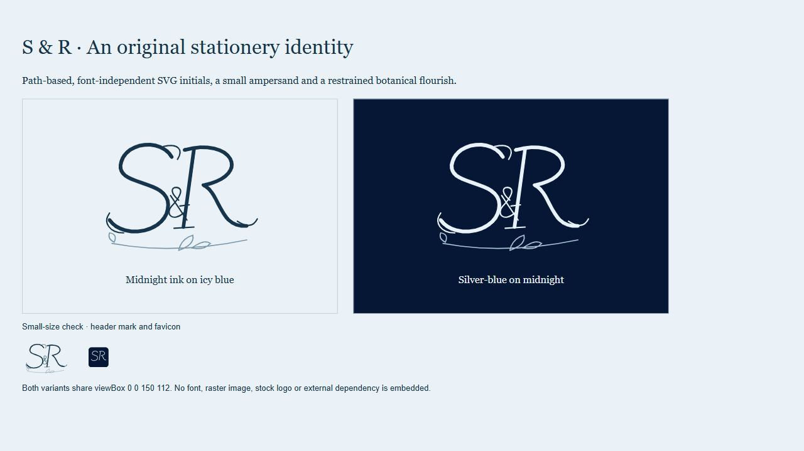
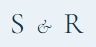
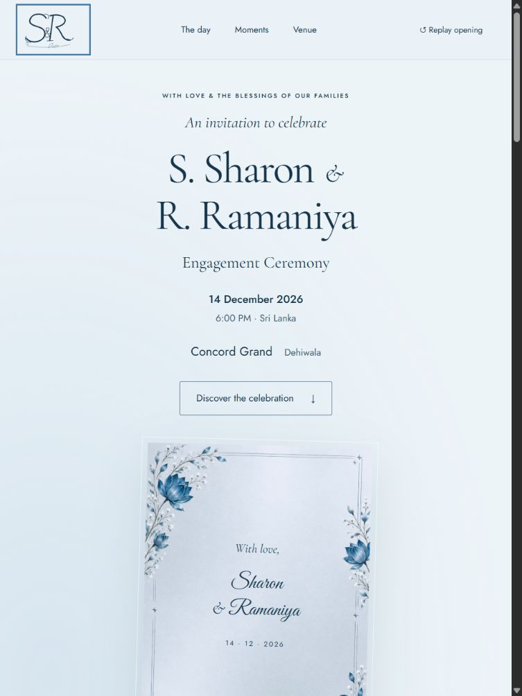
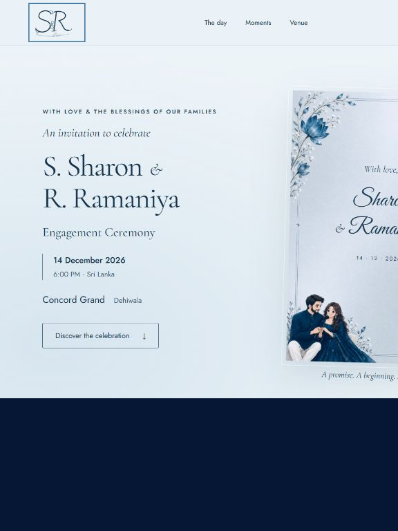
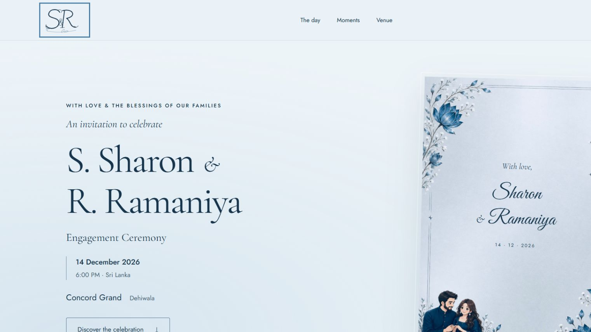

An original S & R monogram


Tablet and large-screen layouts






Branding in the preserved mobile opening


Countdown values differ between captures because the countdown is live. Before/after views use the same viewport for each comparison; scroll framing can vary slightly.